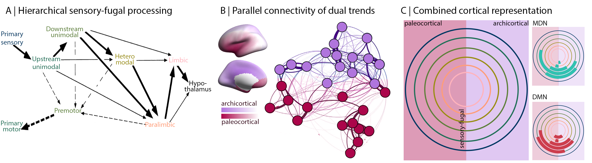

Featured Paper
CLOSING THE MECHANISTIC GAP: THE VALUE OF MICROARCHITECTURE IN UNDERSTANDING COGNITIVE NETWORKS
from Casey Paquola
Contemporary research linking spatial patterns of neural activity to psychological constructs describes “where” hypothesised functions occur, but not “how” these regions contribute to cognition. Closing this mechanistic gap is critical in forming a mature scientific account of the brain mechanisms behind human thought, and for enabling the generation of models of the orchestrated functioning of network subcomponents. In this review, we suggest that a brain-based interpretation of human cognition can be enriched and guided by studying the microarchitecture of large-scale functional networks, notably the multiple demand network (MDN) and default mode network (DMN).
From “where” to “how”: using functional networks to understand cognition
Using fMRI in humans, the MDN is defined by the regions’ tendencies to increase in activity when tasks difficulty increases. The DMN shows an opposite pattern, declining in activity when external difficulty drives task performance, but increasing in activity when tasks rely more on memory. Both networks are associated with a wide range of overlapping cognitive and behavioural states, which presents a challenge in forming a consensus view of the functions these systems perform. Thus, we consider these networks as interesting “scientific objects”; phenomenal entities that attract scientists precisely because they outline what is not yet known.
Mechanistic insights into the default mode and multiple demand networks At the core of our argument is that mechanistic accounts of cognition can be constrained by a better understanding of what microarchitectural features of the cortex enable neural activity to contribute to particular functions. We discuss the inter-relation between microarchitecture and function with reference to:
- Foundational principles of brain organisation
 - Data-driven analyses of cytoarchitecture and transcriptomics
- Multi-scale anatomy that incorporates local features with inter-regional connectivity
We hope this work motivates neuroscientists to incorporate microarchitectural information into their models of brain function, cognitive and behaviour.
You can find the full paper in Trends in Cognitive Sciences
https://doi.org/10.1016/j.tics.2022.07.001
Feel free to get in touch if you have any questions
c.paquola@fz-juelich.de